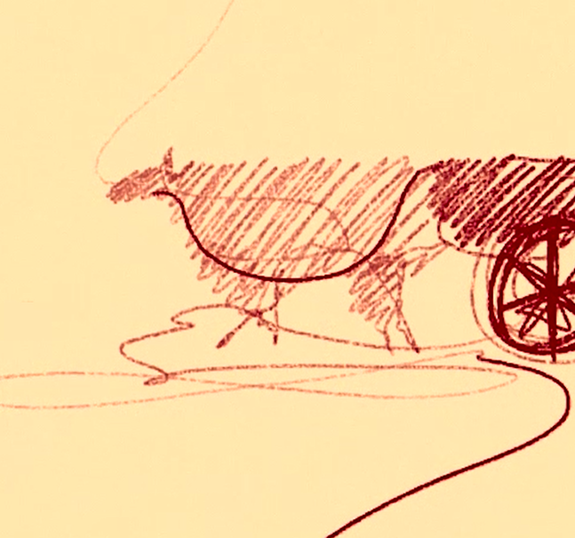

An animation movie showing our (me, savio, vineet) experiences and observations at Old Delhi. A trip without google maps, gliding throughnarrow
streets of Chandani Chowk where sign boards are replaced by people, filled with aroma of street food and joy and laughter of 15-20 classmates.
The animation style
The animation style is inspired from the dyanmism of Delhi's history so thatpeople can now only watch but feel the story we wanted to tell. Delhi have been ruined and built many times but it never stopped. The mighty yamuna being spectator to
all this have been flowing continuously till this date. Therefore we animated this in similar dynamic style
The Stories

On a trip to Chandani Chowk, we saw something simple but unsual. A bullock cart was stranded in the middle of the road and people were doing all sort of parkour to cross it from sides. Nobody stopped and gazed a look at the cart which reveals much about the dymic nature of the city.

We talked to photographers at Red Fort who take your photos and print them. We interviewed people, found stories and studied the effect of modernization in the field. Then our love for camera took us to the film camera market of Chandani Chowk where we found many gems including a Hasselblad in mint condition which we want to buy till this date.
Behind the Scenes